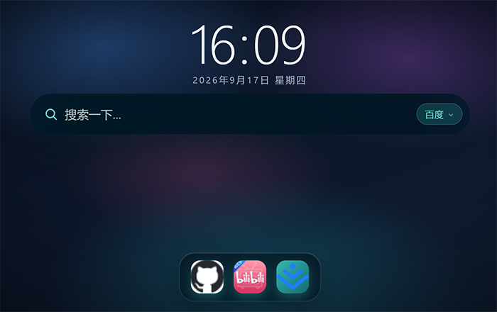
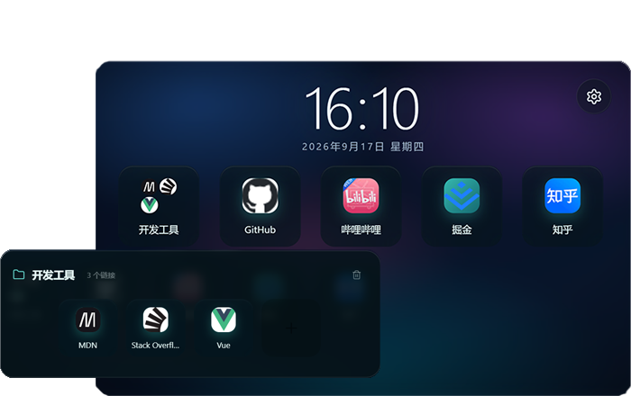
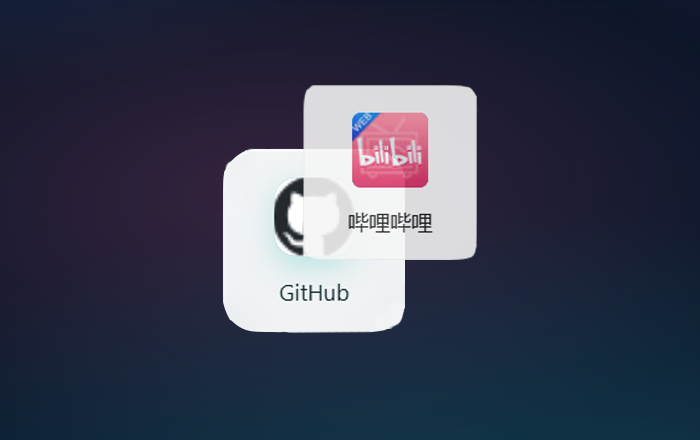
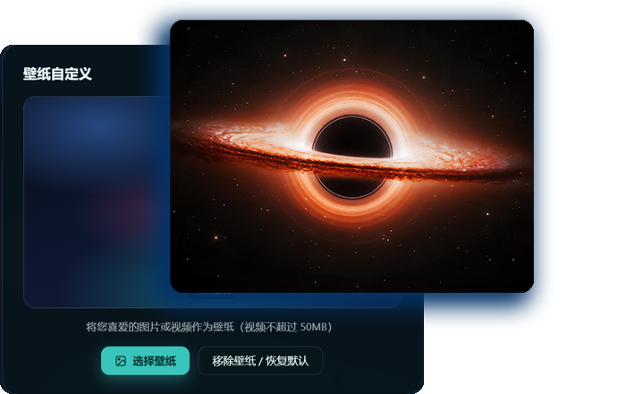
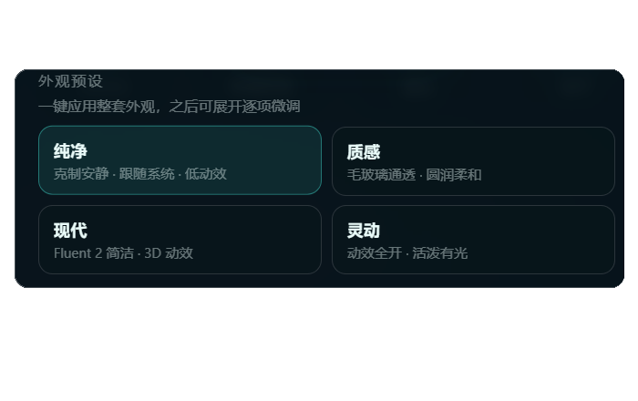
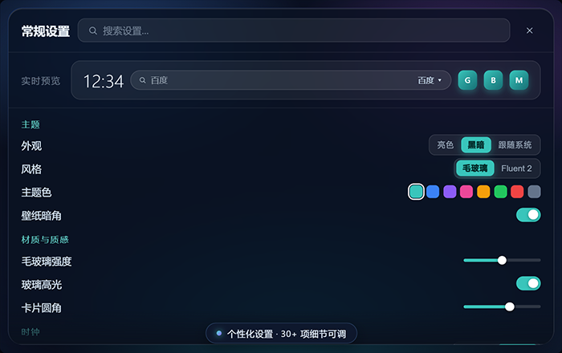

功能
从实用到气质——把每一次打开，变成一件顺心的小事。
搜索功能
多搜索引擎一键切换，回车即达，Tab 循环切换。
网站捷径
常用站点磁贴化，文件夹归类，拖拽排序、右键管理。
壁纸
极光渐变、静态图片、视频壁纸，本地存储、随喜好切换。
自定义
主题色、圆角、密度、透明度、动画，30+ 项细节可调。
界面截图占位

搜索，是留给思想的第一道门
一个不喧哗的入口——回车即达，Tab 在引擎间流转。键盘落下的地方，答案早已就位。
界面截图占位

常用之地，自成秩序
图标安静落位，文件夹收拢归类。拖拽排序、右键整理，让每一次直达都有归途。
界面截图占位

毛玻璃与 Fluent 2，两种呼吸
一种通透，一种利落。一键切换，同一面壁纸也能拥有不同的气质。
界面截图占位

壁纸，是目光最先抵达的地方
极光渐变、静态图片、循环视频——把喜欢的样子，铺成每一次打开新页的序章。
界面截图占位

四种气质，一键成诗
纯净、质感、现代、灵动。一套预设即成整套气质，之后仍可逐项细调。
界面截图占位

每一个细节，都为你留白
主题色、圆角、密度、图标光晕、透明度、动画……三十余处开关，皆可重塑。
现在开始，定义你的每一次开始
从空白到无限，只差一个你